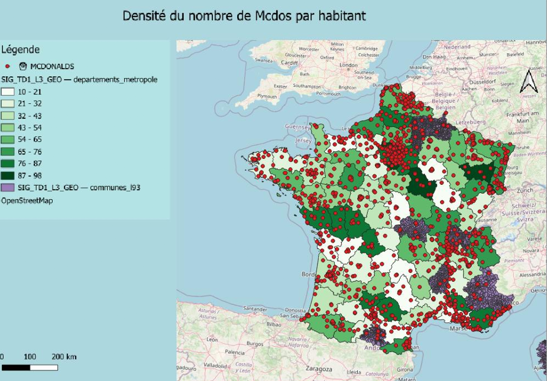
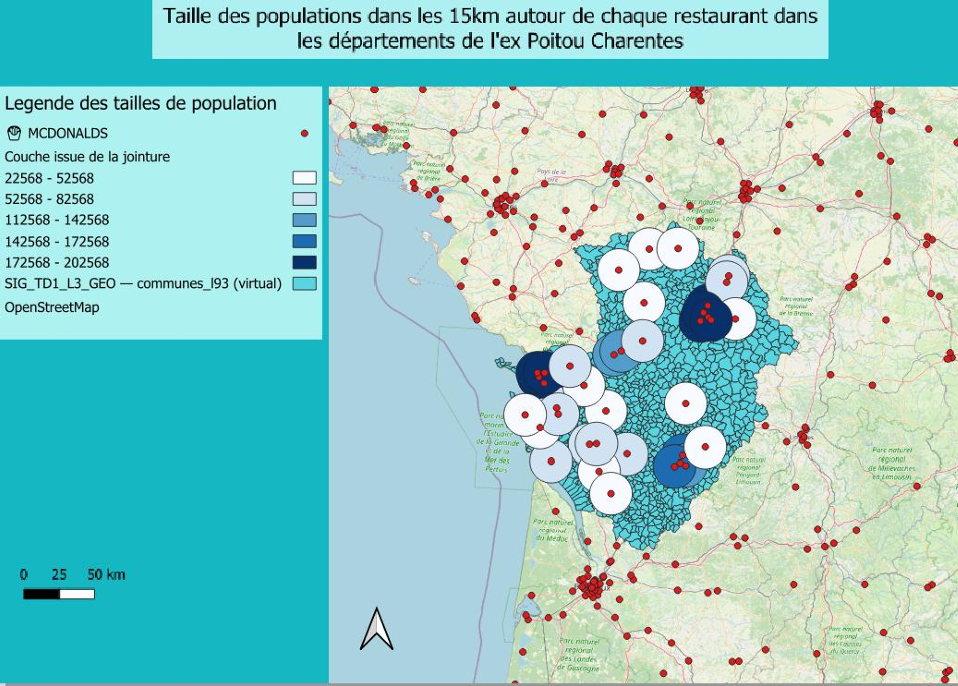

Dans le cadre du développement du réseau de franchise McDonald's France, la direction générale (représentée par MM. GARNIER François et BUREAU Laurent) a sollicité une étude géomatique approfondie du territoire de la France Métropolitaine. L'objectif consiste à modéliser et analyser les structures d'implantation existantes afin de minimiser le risque financier des nouveaux investisseurs et de détecter de nouvelles opportunités de marché.
Ce projet s'appuie sur l'exploitation d'une base de données spatiale géoréférencée au format Geopackage (EVALUATION.gpkg) contenant les découpages administratifs des communes, des départements et l'ensemble des points d'accès aux mobilités urbaines.
Là où un logiciel statistique classique traite des lignes de données indépendantes et des moyennes déconnectées du terrain, le SIG (QGIS) intègre la notion fondamentale de topologie et de géométrie.
En important la couche de points après conversion de coordonnées (WGS 84 vers Lambert 93), l'extension Group Stats sous QGIS a permis de quantifier l'implantation par commune en comptant le volume d'adresses uniques. Un export vers Excel a mis en lumière un Top des villes les plus équipées, caractérisé par une égalité parfaite en fin de classement (générant un Top 16 ex-æquo).
| Rang | Ville | Restaurants |
|---|---|---|
| 1 | Paris | Niveau Maximal |
| 2 | Marseille | Forte Densité |
| 3 | Lyon | Forte Densité |
| ... | ... | ... |
Le croisement des années d'ouverture par région via des graphiques croisés dynamiques montre une expansion continue depuis les années 1980, avec une accélération marquée en Île-de-France et dans le Sud-Est.
Afin de repérer les départements les mieux lotis, nous avons calculé la densité de restaurants ramenée à la population globale. Pour obtenir un indicateur lisible et standardisé, la formule suivante a été appliquée : Densité = Nombre de McDonald's \Population du Département * 100 000
La table attributaire résultant de la jointure avec le code insee_dep a été représentée via une symbologie graduée en 8 classes
cohérentes pour cartographier précisément la saturation du marché français.

Le critère d'accessibilité étant un pilier de la stratégie de l'enseigne ("célérité et commodité"), nous avons appliqué des zones tampons (Buffers) de 500 mètres autour des couches de transport avec regroupement des résultats géométriques superposés. Les requêtes spatiales révèlent :
Pour l'étude locale du bassin de consommation des quatre départements cibles, travailler à l'échelon des polygones départementaux bruts aurait faussé l'analyse. Une zone de chalandise de 15 km étant une entité infra-départementale, nous avons extrait les centroïdes des communes (centres administratifs de population).
En générant des tampons de 15 km autour de chaque restaurant et en réalisant une jointure spatiale par localisation résumée, nous avons calculé la somme réelle de la population contenue dans chaque rayon d'action.

Cette étude démontre la puissance du couplage entre géomatique et décisionnel. Pour optimiser les futures implantations des franchisés, nous suggérons deux axes complémentaires :